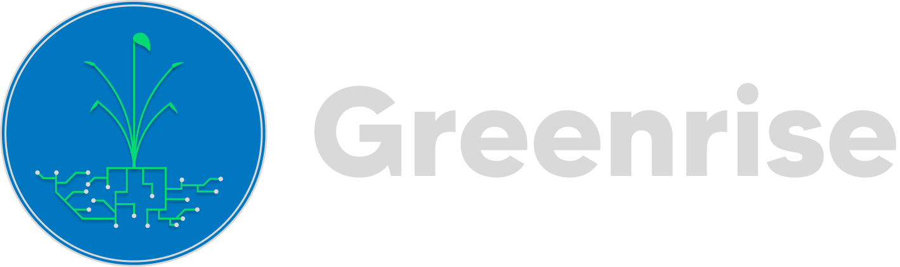
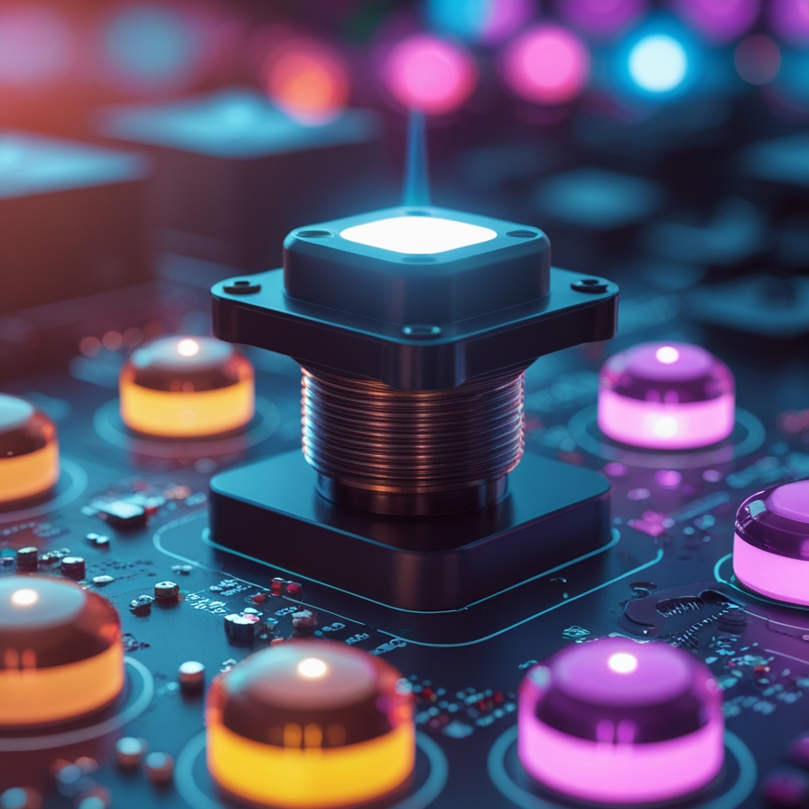
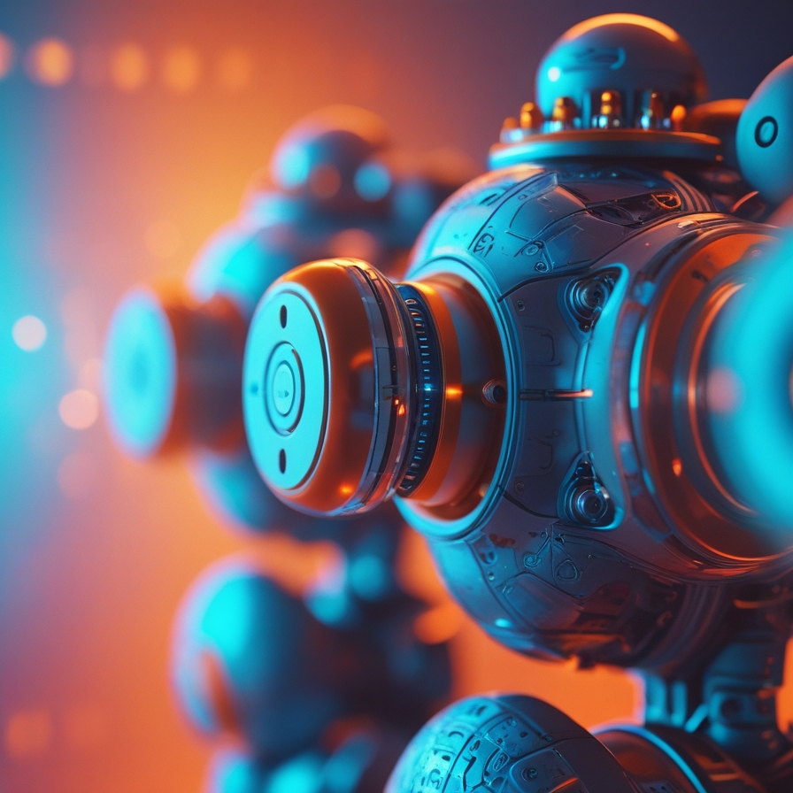
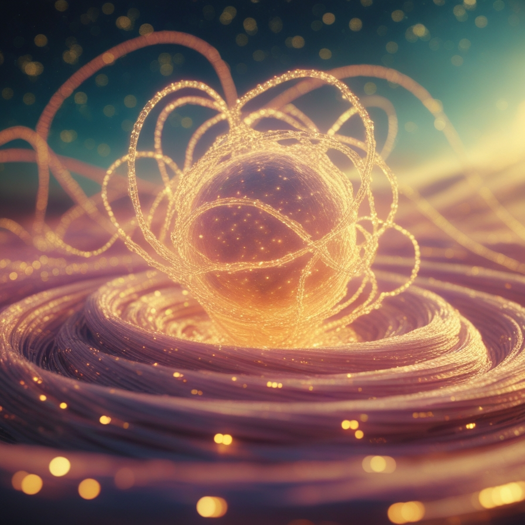
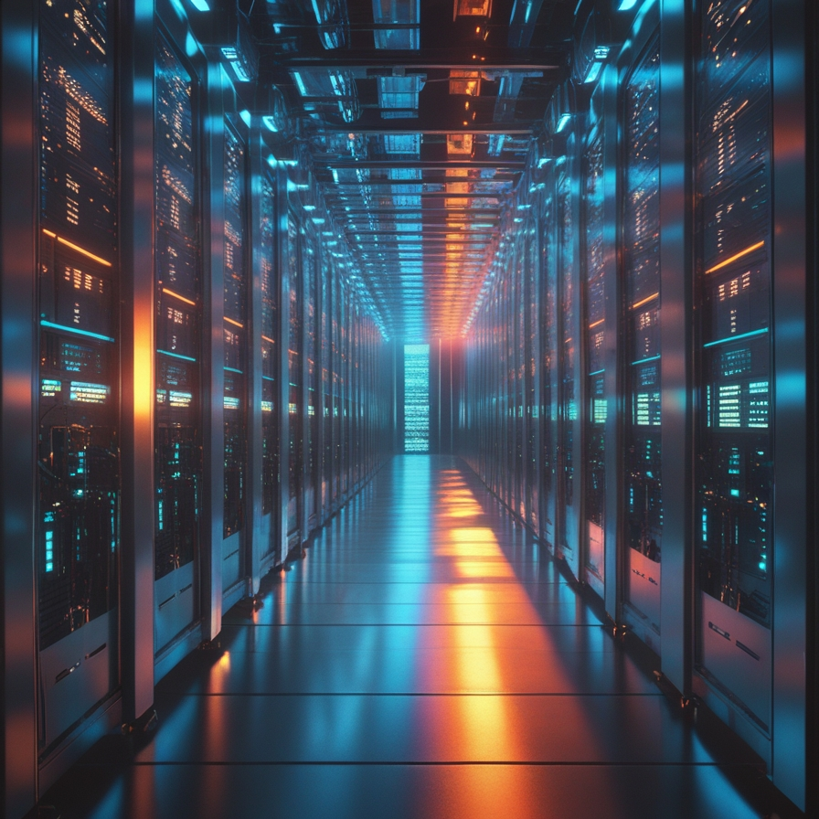
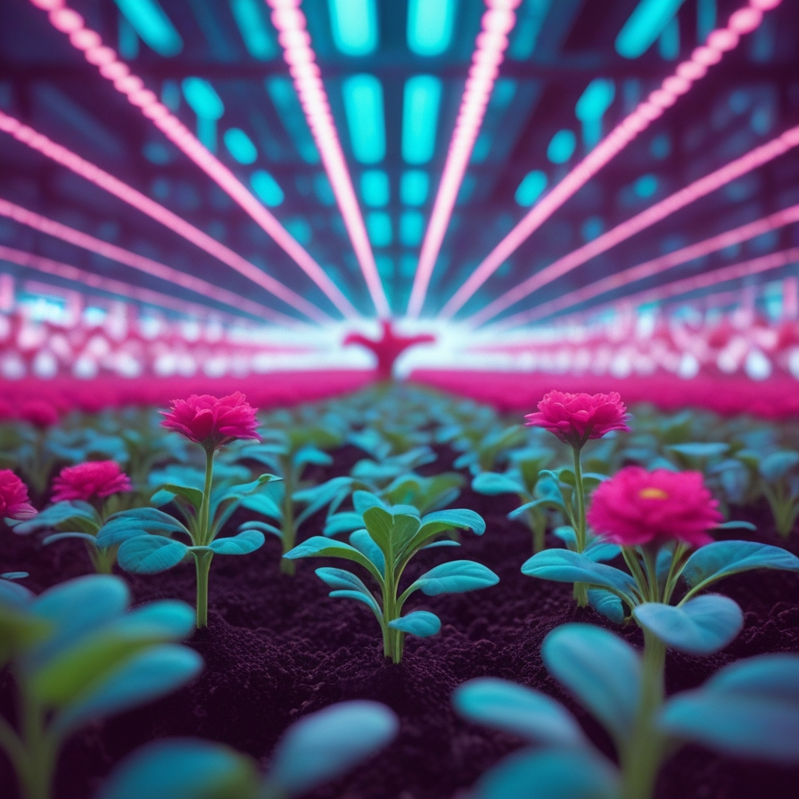
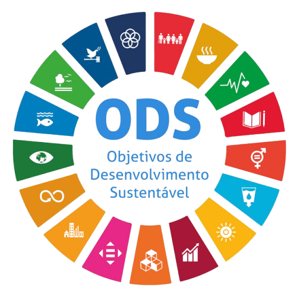

Ambiente Autônomo em Fazendas Verticais
Conheça os 7 componentes essenciais que tornam uma fazenda vertical inteligente com o uso de redes neurais.

1. Sensores e Coleta de Dados
Os sensores são responsáveis por capturar dados do ambiente como temperatura, umidade, luminosidade, pH da água, CO₂ e nutrientes. Essas informações são a base para decisões inteligentes e automáticas. Quanto mais dados, melhor a IA aprende.

2. Atuadores Inteligentes
Atuadores são os "músculos" do sistema. Com base nas análises da rede neural, eles ajustam luzes, irrigação, ventiladores, dosadores de nutrientes e mais, mantendo as plantas sempre nas condições ideais.

3. Rede Neural Treinada
A inteligência artificial aprende com os dados coletados. Com o tempo, ela prevê padrões, detecta problemas precocemente e sugere melhorias para aumentar a produtividade e reduzir desperdícios.
4. Controle Central
É o cérebro que conecta sensores, atuadores e IA. Ele processa os dados em tempo real e executa comandos automaticamente, garantindo que tudo funcione em sintonia e com alta eficiência.

5. Banco de Dados
Armazena todo o histórico de cultivo e funcionamento do sistema. Esses dados alimentam os algoritmos de IA e permitem ajustes futuros baseados em resultados concretos.
6. Conectividade Segura
Um ambiente inteligente exige que tudo esteja conectado com segurança. Protocolos como MQTT, HTTPS e criptografia garantem que os dados fluam entre os dispositivos sem riscos de invasões.

7. Autoajuste Inteligente
O sistema aprende continuamente. Se algo não funcionar bem, a rede neural adapta suas decisões para melhorar os próximos ciclos de plantio — sempre buscando o máximo desempenho.

Objetivos de Desenvolvimento Sustentável (ODS)
A Ceres, por meio de suas iniciativas abordará quatro Objetivos de
Desenvolvimento Sustentável (ODS):
ODS 2 - Fome Zero e Agricultura Sustentável.
ODS 9 - Indústria, Inovação e Infraestrutura.
ODS 11 - Cidades e Comunidades Sustentáveis.
ODS 12 - Consumo e Produção Responsáveis.
Projeto
SELENE
Monitoramento Lunar de Cultivos Inteligentes
Sistema de Monitoramento Autônomo
Conheça os pilares tecnológicos do SELENE — uma plataforma que integra visão computacional, IA e conectividade para cultivos de alto desempenho.
Sensoriamento Multiespectral
O SELENE utiliza sensores de temperatura, umidade relativa, luminosidade PAR, pH, EC e CO₂ distribuídos em toda a estrutura da fazenda vertical. A coleta contínua garante granularidade de dados para decisões em tempo real.
Visão Computacional com CNN
Câmeras de alta resolução alimentam uma rede neural convolucional treinada para identificar doenças foliares, deficiências nutricionais e estágio de crescimento das plantas — com precisão superior a 94% nos testes de validação.
Atuadores de Precisão
Com base nas análises do modelo de IA, atuadores controlam automaticamente irrigação por gotejamento, temperatura do ar, intensidade e espectro luminoso e dosagem de nutrientes — reduzindo desperdício em até 40%.
Motor de Inteligência Artificial
O núcleo do SELENE combina redes neurais recorrentes (LSTM) para previsão de séries temporais com modelos de regressão para otimização de parâmetros. O sistema aprende a cada ciclo de cultivo, tornando-se progressivamente mais preciso.
Banco de Dados Histórico
Todo evento, leitura e ação é armazenado em um banco de séries temporais de alta performance. O histórico alimenta relatórios comparativos por ciclo, estufa e cultura — permitindo decisões agronomicas baseadas em evidências.
Conectividade Segura & Dashboard
Comunicação via MQTT com criptografia TLS entre dispositivos, e dashboard mobile/web (como o exibido acima) com visão geral, alertas em tempo real, relatórios semanais e controle remoto de qualquer atuador.
Loop de Autoajuste Contínuo
A cada colheita, o SELENE recalibra seus modelos com os dados do ciclo encerrado. Esse feedback loop garante melhora constante na previsão de riscos, otimização de recursos e aumento de produtividade ao longo do tempo.
Objetivos de Desenvolvimento Sustentável
O SELENE atua diretamente sobre quatro ODS estabelecidos pela ONU, alinhando inovação tecnológica com responsabilidade socioambiental: